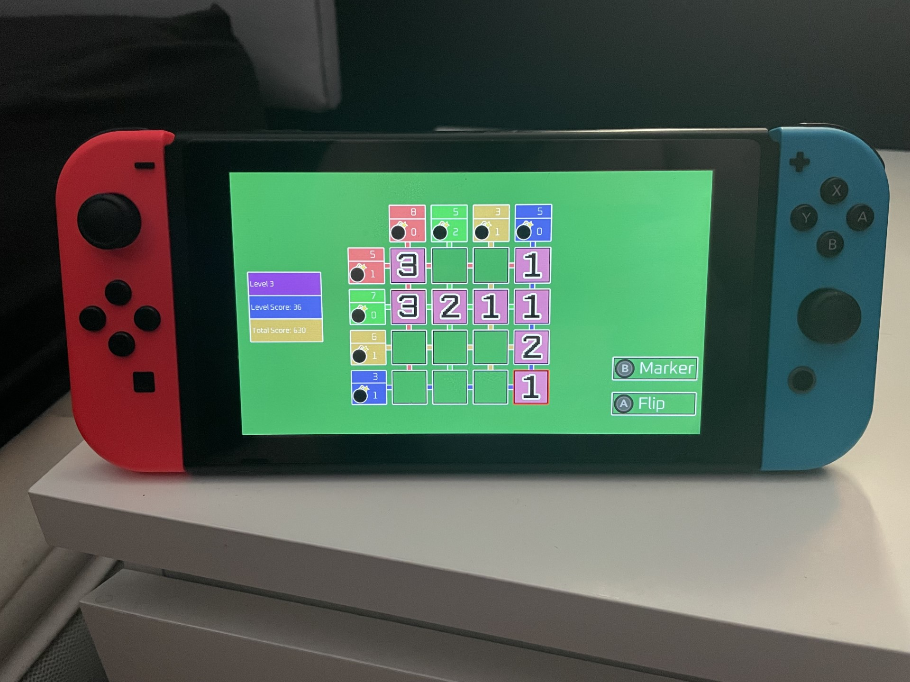
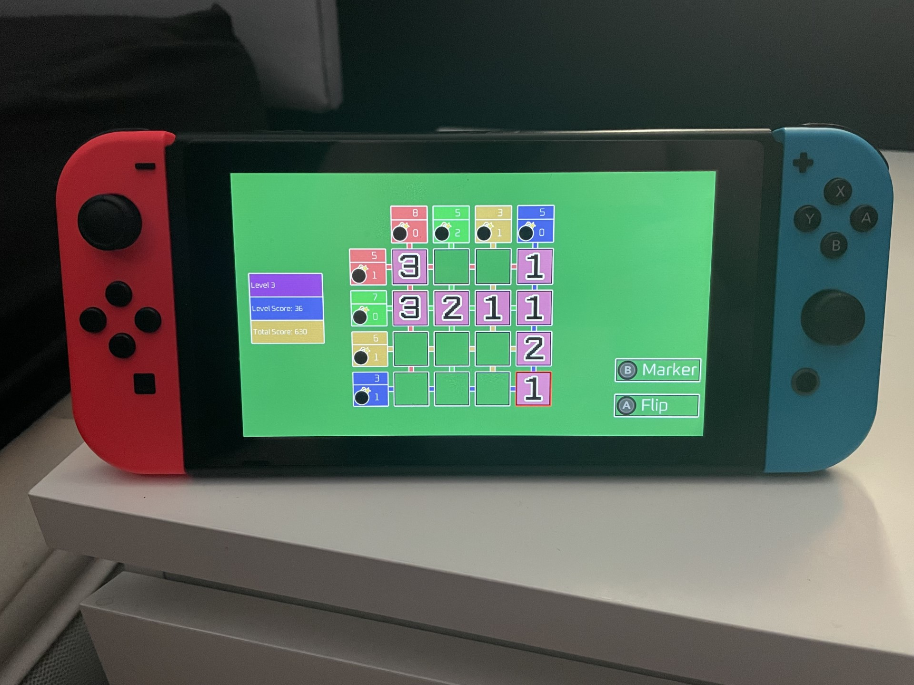
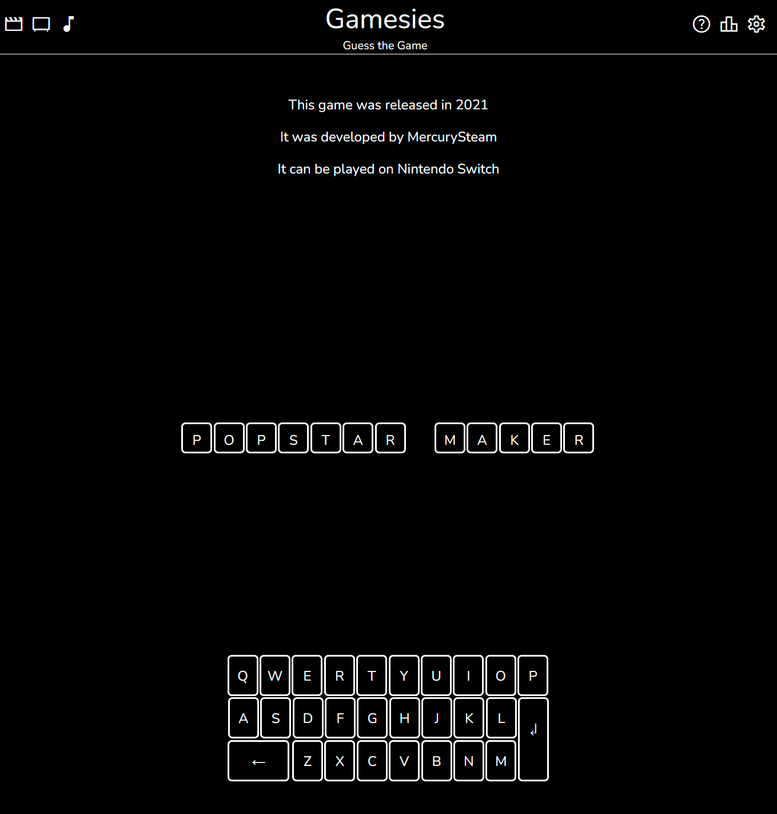
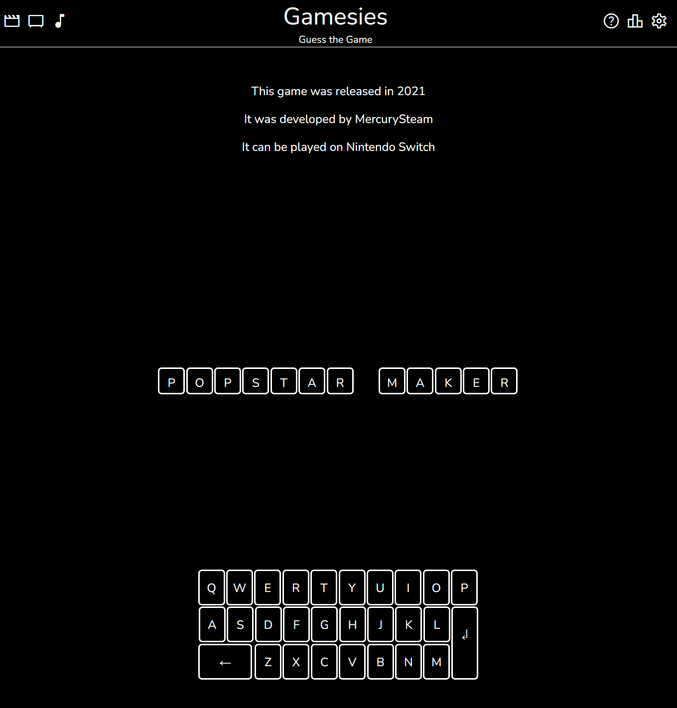
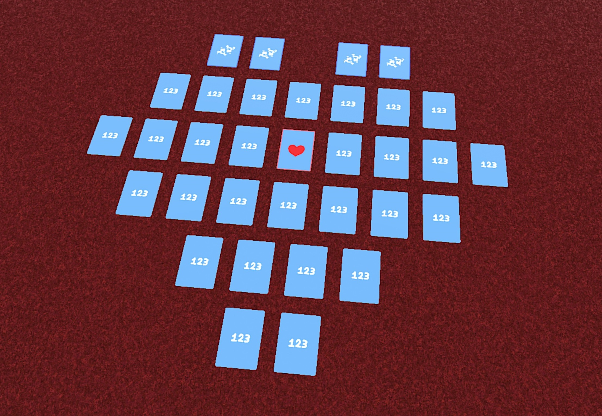
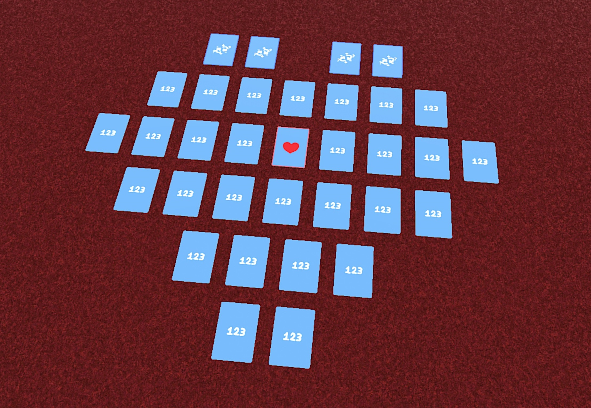
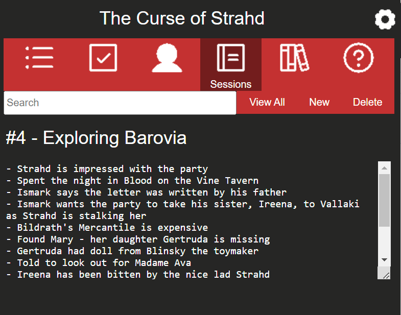
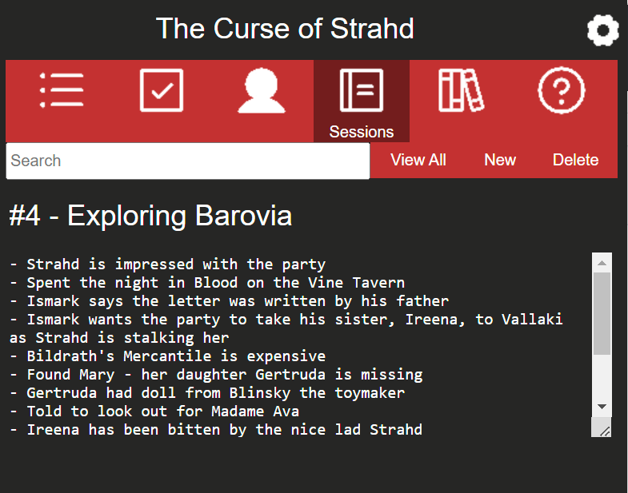
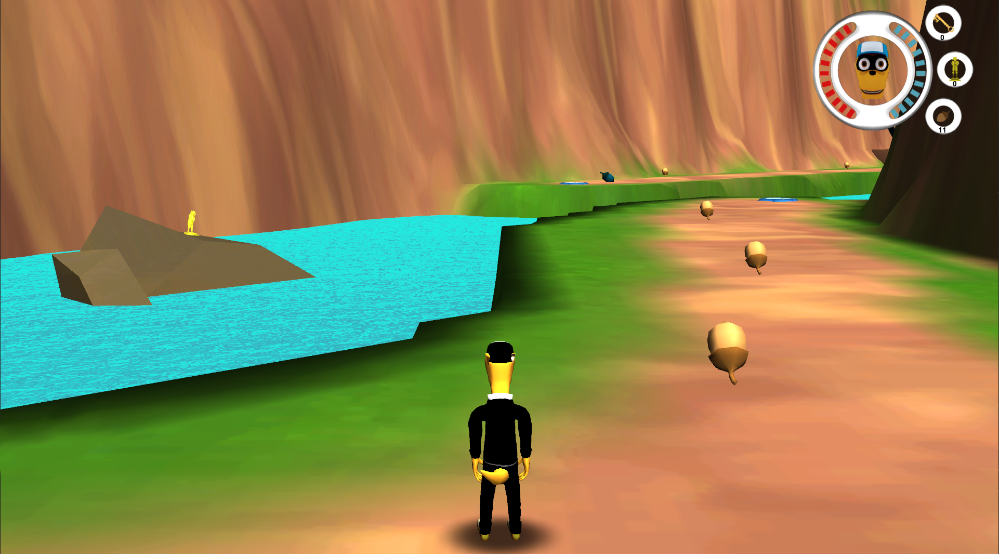
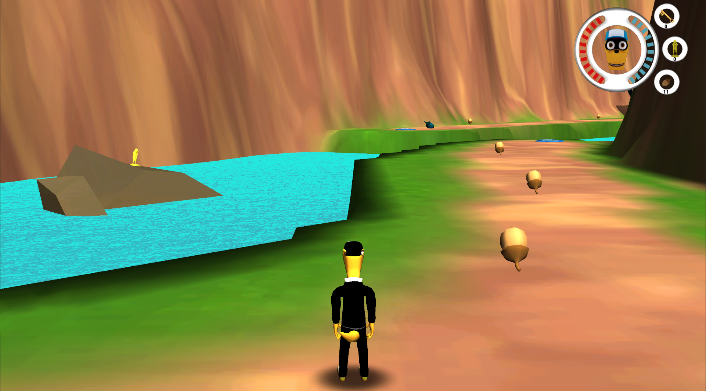

Click on an item below to view more information.
Click on an item below to view more information.
The LEGO Movie 2 Videogame
2019 - PS4, Xbox One, Nintendo Switch, PC
I created a Quest Editor, written using C# and WinForms, to aid the Design team
with the setting up of quests. This was to provide them with a singular entry
point for editing quests, instead of having to manually edit multiple files in
several different locations.
LEGO The Incredibles
2018 - PS4, Xbox One, Nintendo Switch, PC
As a Senior Game Scripter, I was responsible for all scripted content in the
game's Hub world and led a small team to implement, polish and fix things
ranging from pedestrians and traffic to missions and ambient events.
I played a key role in prototyping and iterating on the new Crime Wave system, developing generic and template scripts that could then be rolled out across the 100+ events in the Hub.
I played a key role in prototyping and iterating on the new Crime Wave system, developing generic and template scripts that could then be rolled out across the 100+ events in the Hub.
The LEGO Ninjago Movie Video Game
2017 - PS4, Xbox One, Nintendo Switch, PC
I joined the project part-way through as a Game Scripter and worked across
many levels in the game, either implementing content or refining what had
already been setup.
There were many members of the team that had transitioned over from handheld development - in both Script, and the wider development team - and I would often be assisting them with any queries or problems that they had.
There were many members of the team that had transitioned over from handheld development - in both Script, and the wider development team - and I would often be assisting them with any queries or problems that they had.
LEGO Dimensions - The LEGO Batman Movie Story Pack
2017 - PS3, PS4, Xbox 360, Xbox One, Wii U
As a Game Scripter, I was responsible for almost all scripted content in
this DLC pack for LEGO Dimensions. In addition to the time I spent implementing
content and fixing bugs across all levels and the Hub, I also trained a new
member of the Script team.
LEGO Star Wars: The Force Awakens
2016 - PS3, PS4, Xbox 360, Xbox One, Wii U, PC
I worked across many of the game's levels as a Junior Game Scripter,
adding in characters to fight as well as setting up boss battles.
LEGO Jurassic World
2015 - PS3, PS4, Xbox 360, Xbox One, Wii U, PC
In my first project as Junior Game Scripter, I placed characters and wrote
their scripted behaviour across levels based around Jurassic Park 3 and
Jurassic World.
Bomb Flip
2023 - Switch (Homebrew)
Bomb Flip is a clone of the Voltorb Flip minigame featured in Pokémon HeartGold
and SoulSilver, but with the addition of different size grids. The objective is to flip
all the tiles with values of 2 and 3 while avoiding the bombs.
This was written in C++ using the libnx library, and SDL2.
Bomb Flip is available to download on GitHub and is playable either on a Nintendo Switch emulator for PC or on Switch hardware that is capable of running custom firmware.

This was written in C++ using the libnx library, and SDL2.
Bomb Flip is available to download on GitHub and is playable either on a Nintendo Switch emulator for PC or on Switch hardware that is capable of running custom firmware.

Filmsies / Gamesies / Showsies / Songsies
2022 - Web
Four games with the same premise - 5 chances to correctly guess the title
of a film / game / show / song. Each incorrect answer reveals a hint. The
titles change every 24 hours.
These were all written in JavaScript, with a little bit of HTML and CSS.
All games are playable in a web browser.
Filmsies
Gamesies
Showsies
Songsies

These were all written in JavaScript, with a little bit of HTML and CSS.
All games are playable in a web browser.
Filmsies
Gamesies
Showsies
Songsies

Heart of the Cards
2022 - PC
Heart of the Cards is a card game where skill does not matter. It's all about believing in the Heart of the Cards.
The cards are arranged in the shape of a heart and each turn players each pick one of them up. At the end of the game the card in the middle - the Heart Card - is flipped, revealing the conditions needed to win.
It can be played online with friends through Tabletop Simulator, and more information about the rules and how to play IRL can be found here.

The cards are arranged in the shape of a heart and each turn players each pick one of them up. At the end of the game the card in the middle - the Heart Card - is flipped, revealing the conditions needed to win.
It can be played online with friends through Tabletop Simulator, and more information about the rules and how to play IRL can be found here.

There's Always a Bigger Fish
2022 - PC, Android
Crappy Bird
2022 - PC, Android
Tabletop Adventure Journal
2021 - Chrome, Firefox
Tabletop Adventure Journal is a browser extension to make note taking and
sorting during tabletop games (like D&D) easier than trawling through a mammoth
document or pages of notes.
This was written primarily in JavaScript, with a little bit of HTML and CSS.
Install through Firefox Add Ons.
Source code is also available through GitHub.

This was written primarily in JavaScript, with a little bit of HTML and CSS.
Install through Firefox Add Ons.
Source code is also available through GitHub.

Fletch: Dawn of the Golden Eagle
2013 - PC
Developed in Unity as the final year team project at University, I was one of two
programmers on Fletch: Dawn of the Golden Eagle. Fletch is a 3D platformer,
inspired by the early games in the genre released on PS1 and PS2. While I dived
into a lot of the game's functionality, the quest system was one of the core
features I was responsible for.
I also wrote a companion app, called Fletchbook, for Android using Java. Unfortunately this is no longer available.
Fletch is available for Windows by downloading through ModDB.

I also wrote a companion app, called Fletchbook, for Android using Java. Unfortunately this is no longer available.
Fletch is available for Windows by downloading through ModDB.

After achieving a First class degree in Computer & Video Games in 2013,
I spent 5 years working on over a dozen LEGO titles at TT Games. Between
2013 and 2014, I tested handheld and mobile games before joining the
console team at the end of 2014 as a Junior Game Scripter. In 2018, after
having been promoted twice to Senior Game Scripter, I left the games industry.
The next 3 and a half years were spent as a Software Developer at Citrus Lime. This included refactoring the codebase to properly modernise and scale their ePOS system, as well as adding in new features from adding tables to a database right through to displaying that data on the front-end.
I spent the majority of 2022 working on my own projects, some of which can be found under the Personal and Source Code headers at the top of this page.
In 2023 I joined a FTSE 100 Company as a Software Engineer, with a promotion to Senior Software Engineer in 2024.
As well as using proprietary technology, I have created finished games using Unity, MonoGame and Game Maker. I also have some experience in Unreal 5.
While I am not an artist, I am comfortable with Photoshop and am capable of modelling and rigging with Blender.
The next 3 and a half years were spent as a Software Developer at Citrus Lime. This included refactoring the codebase to properly modernise and scale their ePOS system, as well as adding in new features from adding tables to a database right through to displaying that data on the front-end.
I spent the majority of 2022 working on my own projects, some of which can be found under the Personal and Source Code headers at the top of this page.
In 2023 I joined a FTSE 100 Company as a Software Engineer, with a promotion to Senior Software Engineer in 2024.
Skills
I am proficient in C#, JavaScript and Typescript, and have experience with C++ and Java.As well as using proprietary technology, I have created finished games using Unity, MonoGame and Game Maker. I also have some experience in Unreal 5.
While I am not an artist, I am comfortable with Photoshop and am capable of modelling and rigging with Blender.